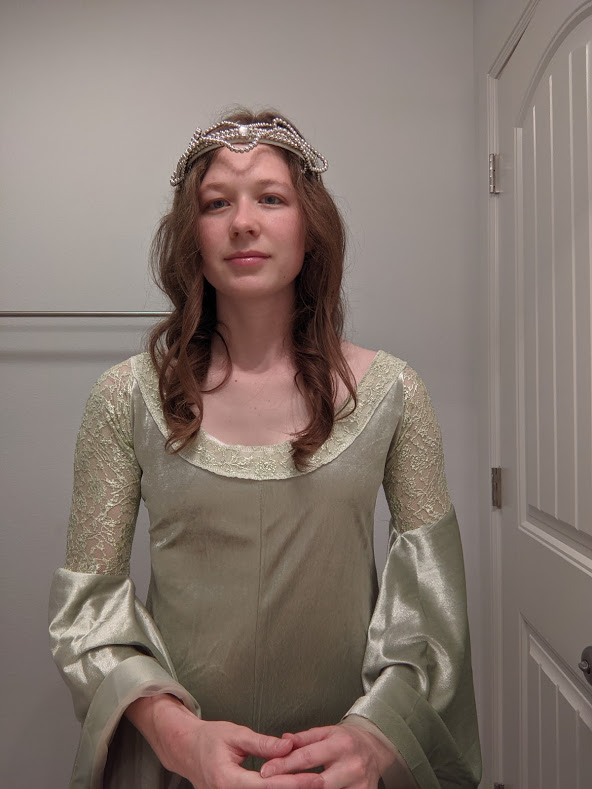

Summary:
Avid cosplay fan with years of experience reading Lord of the Rings (LOTR) novels and watching LOTR movies. Interested in working at cosplay event centers and voice acting for HISHE.
 “Home is behind, the world ahead,
and there are many paths to tread
through shadows to the edge of night,
until the stars are all alight.”
― J.R.R. Tolkien, The Lord of the Rings
“Home is behind, the world ahead,
and there are many paths to tread
through shadows to the edge of night,
until the stars are all alight.”
― J.R.R. Tolkien, The Lord of the Rings
Experience:
- 2021: Went to LOTR party with official "No admittance except on party business" sign.
- 2020: Participated in clubs writing fan-fiction for LOTR.
- 2010-2019: Read Lord of the Rings series 10 times (once per summer)
- 2010: Drew portrait of Elijah Woods portraying Frodo Baggins for a school project
Cosplay Photo: Arwen
Halloumi say cheese swiss. Pepper jack the big cheese smelly cheese jarlsberg cream cheese melted cheese red leicester stilton. Cut the cheese port-salut croque monsieur cow parmesan jarlsberg emmental stilton. Cheese slices cut the cheese emmental roquefort stinking bishop stinking bishop.